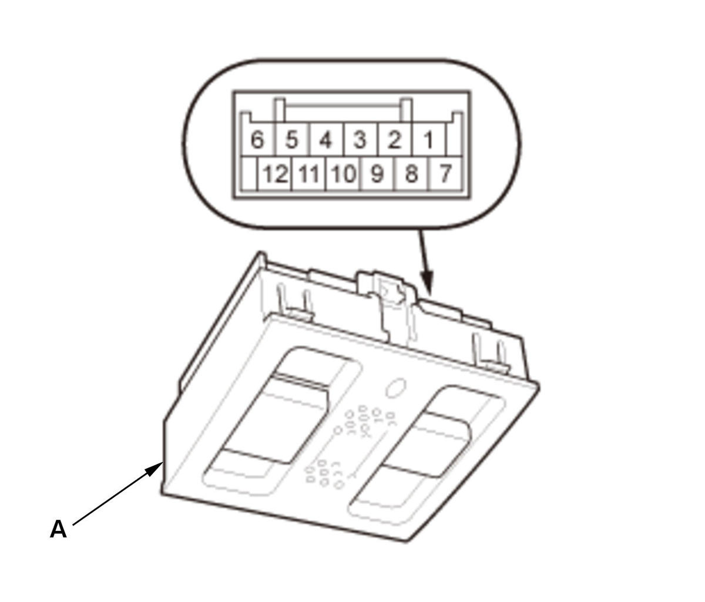
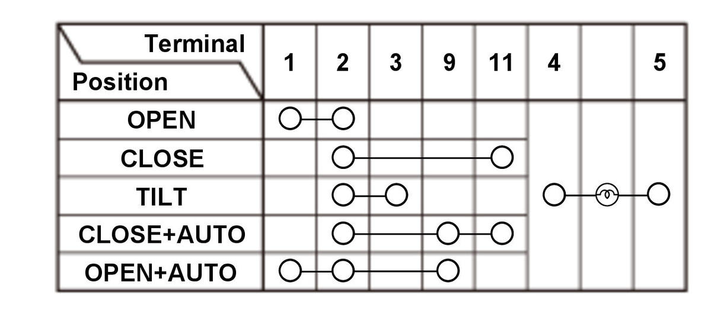

  Courtesy of HONDA, U.S.A., INC.HONDA, U.S.A., INC.
Courtesy of HONDA, U.S.A., INC.HONDA, U.S.A., INC.
|
NOTE:
When doing the moonroof switch (A) test, install the bulb correctly. 1. Check for continuity between the terminals in each switch position according to the table.
2. If the continuity is not as specified, replace the bulb or moonroof switch.
|